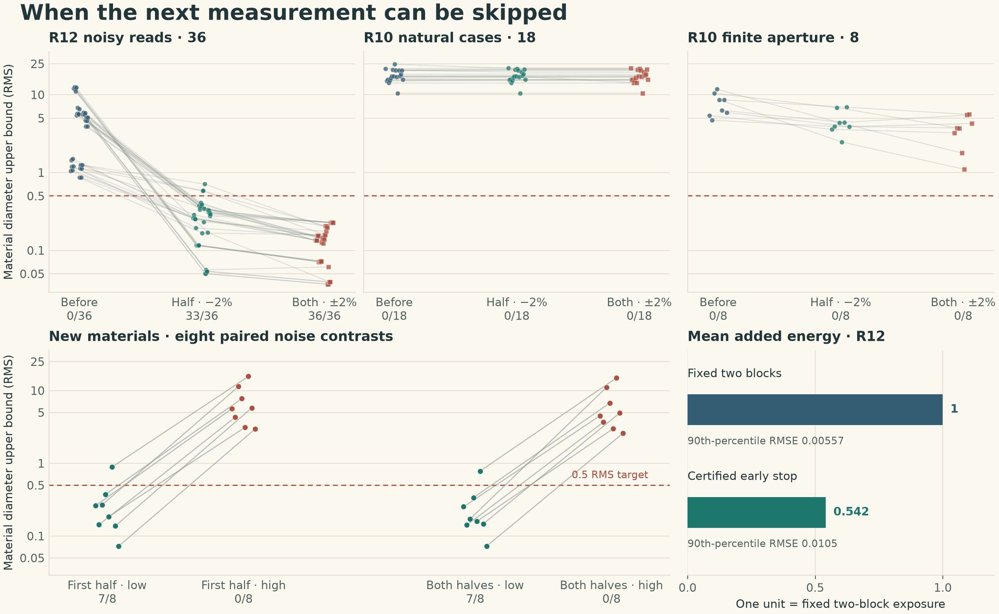
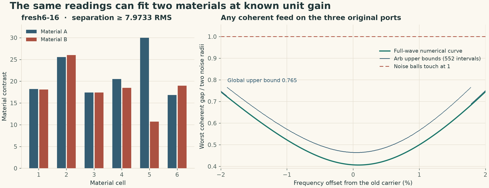
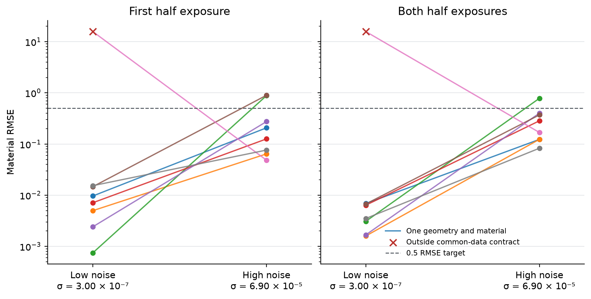

换频后，还有多少份材料能解释同一组读数？
在六材料二维 Maxwell 仿真里，少量新读数有时能把材料范围缩小到足以停止测量。自然目标上，即使任选连续频带内的频率和原有端口的馈电，两份差别很大的材料仍可能给出相同读数。
- 62/62 只看旧读数的区域选频全部回退固定 ±2%。
- 33/36 R12 带噪案例先测 −2% 半能量，就能省去第二块。
- 11.568 RMS 的自然材料差，在连续 ±2% 和原三端口等能量相干馈电下仍可能被噪声掩盖。把增益固定为已知的 1，另有一对相距 7.9733 RMS 的材料。
- 15.71 → 0.000904 新低噪案例的半能量恢复经区域初始化修复，同一份读数的求解用量由 496 降到 8 次矩阵因子化。
只看旧读数，62 案都回退到固定频率
给定已知的发射、接收位置和旧频率，先求哪些材料能在允许的复增益漂移和加性误差内解释同一组旧读数。筛选后保留一组材料盒，评估备选频率下可能剩余的最大材料差。RMS 材料差是六个单元对比度之差的均方根，以无量纲的材料对比度为单位。
以 0.5 RMS 为目标，36 份 R12 带噪读数、18 份 R10 自然目标读数和 8 份有限孔径读数的事前上界均未达标，因此全部使用固定 ±2% 双频，执行同一个求解器时恢复结果逐案相同。固定方案在 −2% 和 +2% 各用半单位发射能量。这里的百分比以原频率为基准。

收到半能量读数后，33 案可以停
先在 −2% 收一块半能量读数，并用实际收到的复数回波重新缩小材料集合。如果集合内任何两份材料的距离均不超过 0.5 RMS，就省掉 +2% 的第二块。R12 的 33/36 案先停，另 3 案补齐第二块后达标。自然组与有限孔径组全部补齐，两组都没有达到该直径目标。
| R12 的 36 份带噪旧读数 | 平均新增能量 | 平均新增频块数 | 材料 RMSE 90 分位 | 共同数据相容 |
|---|---|---|---|---|
| 固定补齐两块 | 1 | 2 | 0.00557 | 36/36 |
| 先测一块，达标就停 | 0.542 | 1.083 | 0.01047 | 36/36 |
新增能量以固定双频方案为 1 单位。每频块含三个端口各一次独立发射，固定与序贯方案平均需要 6 次和 3.25 次新增独立发射。两行使用同一组新读数的前缀和同一八起点恢复器。共同数据相容指旧、新读数可由同一复增益和合同内的误差解释。
平均节省的 45.8% 指新增发射能量。如果连已经完成的旧测量也计入，总能量由 2 份降至 1.5417 份，节省 22.9%。
在八套另行生成的材料和几何上，仅改变接收噪声。低、高噪条件的每复通道标准差分别为 3 × 10−7、6.898 × 10−5。测完第一块后，低噪条件有 7/8 达到 0.5 RMS，配对的高噪条件有 0/8 达标。八对共用各自的几何、材料、增益与标准噪声样本。
任意选频和相干馈电仍可能分不开材料
自然案例 fresh6-16 有两份相隔至少 11.568 RMS 的材料。它们都能解释同一组旧读数。对每个 −2% 到 +2% 之间的实数频偏，原有三个发射端口可使用任意相位和幅度组合。只要新增总辐射能量保持在一单位内，两份材料的新读数误差球就存在重合。两个解释分别沿用与其旧读数相容的固定复增益。
这对材料在整段频带内的最坏加权回波差，上界是两个噪声半径之和的 0.969 倍。因此，在能同时由两份材料产生的读数上，任何单一材料估计对至少一种解释的误差达到 5.784 RMS。
精确知道增益后，歧义仍然存在
把两份解释的增益都固定为已知的 1，同一案例仍有另一对相距至少 7.9733 RMS 的材料。连续 ±2% 内任意使用原三个端口做相干馈电，并任意分配一单位总新增能量，两份解释的噪声球仍可重合。552 个 Arb 区间覆盖整段频带，最大回波差上界为两个噪声半径之和的 0.765 倍。认证实测 16.33 秒 CPU、17.06 秒墙钟时间。

如果未来噪声是独立圆复高斯，即使允许用以往读数自适应选择下一次测量，在这两份材料等先验的二元比较中，条件判错率仍有约 1.01% 的理论下界。推导与假设见数学报告。
自然组 18/18 案都找到两份旧数据相容、相距超过 1 RMS、且在固定 ±2% 双频下可能产生同一份未来读数的材料。连续频带的结果适用于相同的二维材料模型、原端口和给定噪声合同。
连续频带图 PDF 已知单位增益的 552 个区间 11.568 RMS 见证 固定补测的 18 案结果 连续频带和测量反馈推导
好的材料范围能帮助求解器避开错解
在一组新低噪目标 val6-06 上，普通八起点用第一块读数得到 RMSE 15.71 的不相容材料。从保留材料盒的坐标包络中点出发，在这个包络内做一次同样的信赖域拟合，使用原样的半能量读数，将 RMSE 降到 0.000904。新输出共同数据相容，到任一盒内材料的 RMS 距离上界为 0.0727。
这一案半能量恢复从 496 降到 8 次全波矩阵因子化。给定已经计算的盒，单起点精修在各组的 CPU 时间中位数为约 3–7 毫秒，普通八起点为约 34–49 毫秒。构造材料盒是额外成本，仅 R12 的旧材料再缩盒 CPU 时间中位数约为 1.34 秒。自然组的材料盒仍宽，精修没有降低误差尾部。

新材料精修逐案数据 62 案精修成本 固定选频、累计拟合与计算开销
只保留第一次旧域缩盒，端到端成本下降
若按相容输出到保留区域的最远 RMS 距离不超过 0.5 来停止，R12 的 36/36 案第一块就够。省去第二次旧域缩盒前后，材料 RMSE 的 90 分位均约 0.011，每案 CPU 时间中位从 2.181 秒降至 0.898 秒，包含第一次旧域缩盒。这个对照使用输出半径，前文的 33/36 使用整个区域的直径。新材料配对仍是低噪 7/8、高噪 0/8，省掉一步的高噪半径中位更宽。
哪些结果值得写进论文？
第一项是可核查的材料歧义。在 16 条旧记录中，至少有两片互相分开的材料区域，各自都有合法材料，且它们之间存在一整段与读数不相容的区域。已知增益的整频带反例进一步说明，固定接收位置和有限发射能量可以限制所有带内选频策略。在该例中，将接收器沿任意方向移动约两个百万分之一波长，反例仍然成立。这个已证的位置范围很小。
第二项是给具体恢复结果加上可信的误差范围。旧材料域直接加入新回波后，低噪声下可以可靠地提前停手，也确实修复了一个独立材料的严重错解。便宜的固定半轮测量在 36 条历史条件记录上，八起点求解的实际误差本就全部低于 0.1。主动选频的成像优势还没有建立。
目前最接近 Inverse Problems 的是对有限设备可辨识能力的上下界。想支撑强 SIAM JIS 算法论文，还要在独立材料与通用集合算法上取得端到端收益。向 IEEE TAP 投稿，则需要有说服力的天线标定、模型误差或实测验证。